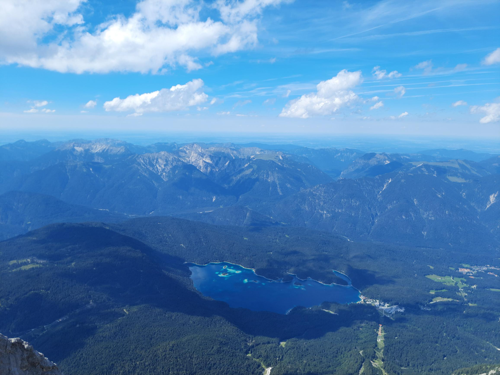

Amit Kumar Mallik
Hello everyone, this is Amit Kumar Mallik, a fourth-year undergraduate in Computer Science and Engineering. My primary research interests are Graph Theory, Combinatorics and Algorithms. Apart from academics, I am into hiking, cycling, adventure, travelling etc. This summer, I did a research internship under the supervision of Prof. Sándor Fekete, TU Braunschweig. This (pretty long) blog is about my internship experience. So, let’s dive into it
Second Year Internship Season
My third-year internship is intermingled with my second-year internship. So, let me first share about that. In my second year, I applied via PT Cell to TU Braunschweig. The selection was based on a resume-based shortlist followed by an interview. The interview was not at all technical and very chill. The professor focused on knowing our academic interests, expectations from this internship, previous experience in algorithms and just getting to know us as a person. I remember discussing cycling with the professor in the middle of the interview :). Finally, all of us who appeared for the interview got selected for the internship (surprising but yeah xD). The internship was online that year. But, the professor mentioned at the end that even though the internship had to be online, we could come to Braunschweig sometime later!
Third Year Internship Season
In my third year, I initially tried to do apping. I was warned before that apping is very stressful and time-consuming. But, I also realized that apping in a theoretical field like this is significantly more challenging than in other fields. That is because it takes a lot of time to make some sense out of a research paper in these fields (especially Graph Theory). Also, I was very very selective in terms of research interests and because of that, I was left with only a few professors to mail. Most of the time, I didn’t get any reply and sometimes I got a negative reply. In the end, I mailed Prof. Sándor for a research internship and he agreed.
Battle against the German Consulate
Now, with everything settled with the professor, it was time to apply for a visa. While the process is usually very streamlined and quick (it takes around 15 days to get the visa and some of my friends even got it in 5 days during the winter!), there were some novel challenges this time. The German Consulate misinterpreted this internship as a work internship and hence asked for a work permit. The professor was already in the process of sorting out this issue with the Consulate so I waited for it. And by the time the issue got sorted, there were no appointments left! It was a very busy season with a lot of people applying for the Schengen Visa. Luckily, I got an appointment and landed in Germany in June, a month later than what was planned earlier.
Key Takeaways from the process
- Never be very selective in mailing professors. Apping is a process that works when you mail a large number of profs (50 or more).
- If you feel understanding the papers is too hard, don’t worry. Don’t spend too much time understanding the papers. Just mail! But, do make sure to personalise the email and at least mention why the professor's research interests sound appealing to you.
- As you might already know, apping is very stressful and time-consuming. Rejections are inevitable. Stay calm and keep trying.
- If you plan to go abroad for an internship, try to apply for a visa as early as possible (Preferably before March or latest by mid-March). Your application may get stuck up and if it does, there is no other way around it!
- Lastly, even if you don’t secure an internship abroad, it’s not the end. A research project with professors in insti or other institutes in India is just as good. Finally, it’s your research experiences that matter the most in your grad application and your career in general.
The Internship itself
In any theoretical research, you start with reading some research papers and try to find some “tractable” and “open” problems. This can take quite a bit of time. You don’t want to reinvent the wheel. But, at the same time, you also want the problem not to be insanely hard so that you can at least make some progress. While the first part is not that hard as you have to look into other papers citing the paper at hand, the second part is purely a judgement which professors can estimate to some extent by their experience. So you try the problem for some time, get a feel as to what makes that problem so hard that it is still open, discuss the problem and progress with the professor and either decide to continue working on this problem or go back to the first step. Sometimes, the professors already have a problem in mind in which case you are lucky!
The path here was no different. Since I arrived late, my co-interns had already identified 2-3 problems and were getting a feel for them. I joined them and started analysing those problems. Apart from the initial few weeks, I had mostly worked on “packing” and “covering” problems. In a nutshell, packing squares in a square problem is to find the minimum number A such that ANY set of squares with total area A can be “packed” into the unit square. Since the packing squares in a square problem was already solved, we thought about packing cubes in a cube. That turned out to be an easy extension of the proof in the 2D case! So we tried some more related problems like packing spheres in a cube or cubes in a sphere but as you can imagine, those quickly turned out to be nasty with pi and square roots.
Not making much progress on that side, in the last month I started to look at some covering problems starting with the square with squares case. This again was already solved but I tried to think about it myself and critically go through the argument in the paper. Suddenly, an idea struck me and the argument looked incorrect. Well, it wasn’t :). It was just that the paper considered only axis-aligned squares while I was also considering rotation. From that erupted this curiosity, what if we were allowed to rotate the squares? This looked to be a nice, open and tractable problem and I quickly switched my attention to this. Over the month, we discovered a lower bound example and proved the upper bound for exactly 2 or 3 squares. Well, this isn’t it and a lot more is left to be done. We are still trying to prove it for any number of squares and will carry forward this work in the upcoming semester!
It wasn’t only Academics LoL!
Well, research and all is one aspect, but going to Germany and just sitting in your room is simply foolishness :) The professor knew that we would love to travel around Europe. He was pretty cool with that. The workload was pretty flexible but we would typically go to the university throughout the weekdays and plan out some trips for the weekend. You can explore the breadth of Europe by visiting various countries or explore certain places in depth. I have mostly travelled to scenic places in Germany itself. We went to a nearby town for an easy hike. We then cycled back to Braunschweig, which was roughly 60kms, through the country roads. That ride is the most scenic ride of my life so far :).
I had been to a nice beach in Sylt (also known as the vacation island). It was quite peaceful and lovely riding on the coastal roads. The North Sea is usually too cold to take a dip, even in summers! Also, I, being a passionate hiker, used to go to the Bavarian Alps every weekend in July :). I will rather just drop in a picture from Zugspitze, the highest peak in Germany, and leave the rest of the looooong story to some other day.
Planning your finances is a crucial aspect of your offline internship. There are certain things where you have no other choice but to spend (like accommodation) and some where you can save a lot if you are a bit cautious (like food). There are 3 possibilities
- You spend a LOT on food by eating outside or in mess.
- You buy extra baggage allowance and bring a LOT of cheap ready-to-eat packets to sustain yourself for the entire duration (or a part of it).
- Start cooking!
I started cooking here so that I could eat a lot of healthy food at reasonable prices and that worked out pretty well. I didn’t know anything about cooking before the internship and all the cooking that I know now is due to my “desi” flatmates and conversations with my parents. Well, that’s a valuable life skill that I acquired during the internship :)
Final Words
There is one important myth buster that I would like to convey. Undergraduate Research, especially in theoretical fields, is highly student-driven. You choose a problem of your interest, work on it and discuss your observations with the professor. Ofc the professor would help you choose the problem and would suggest to you certain approaches that might work. But, in the end, it’s your responsibility to work on it and discuss it with the professor. It’s not like the professor is going to analyze the problem and assign you some work or so. If you are fond of analogy, you are in the driving seat and the professor beside you. He will suggest directions but you are driving the car and it goes where you drive it to. You won’t learn much if the professor is in the driving seat and you just see him driving! Don’t get worried or intimidated by this just be mentally prepared for this before your internship starts.
Research is a long process. Two months is a very short time to get a tangible output in general. It would be beneficial if you could start reading research papers and try to identify problems before the internship begins. Also, do consider following up on your work with the professor after your internship is over. That way, you will gain the most out of your internship. Research also needs a lot of effort and patience. You need to believe in yourself and keep working on the problem. Most of the time you will be struggling at the ground level making partial progress which at times doesn’t feel like progress. But, suddenly you may get a spark, an idea and within no time you will make significant progress or at times just solve the problem itself! Yes, you guessed it right, Eureka! You never know how far in time the Eureka moment is, so just have faith and keep trying :)
With that said, I wish you all the best for your internship season and your actual internship. Feel free to reach out to me for any queries regarding internship season or research and ofc I would be happy to suggest you hikes in Germany (:
Adios